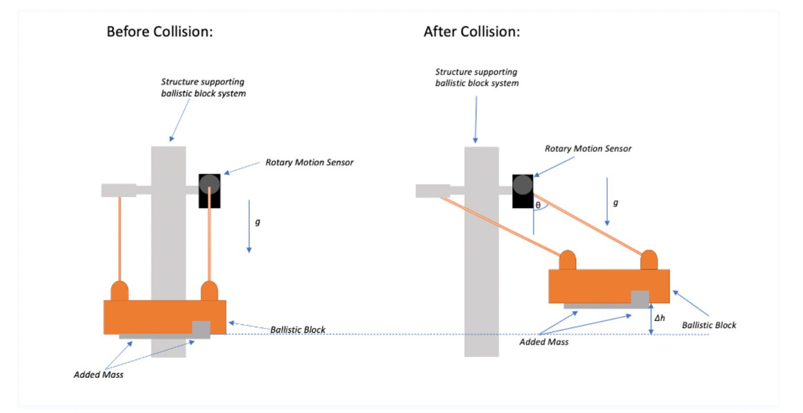

Vacuum Cannon Experiment
Ping-pong-ball exit velocity — simulated, then measured.
Pump the air out of a 1.52 m pipe sealed at both ends with tape. Puncture the back. Air rushes in, the ping-pong ball at the front gets shot out, and a ballistic block on the other side records the displacement. From that, we recover the exit velocity. From there, we go back to the simulation and ask: did we model the right things?

What's happening inside the tube
The pipe isn't a perfect vacuum — there's some residual air. When the back tape ruptures, atmospheric air rushes in and pushes the ball forward. The residual air ahead of the ball gets compressed; that compressed air ruptures the front tape before the ball reaches it. Then the ball flies out, travels about 0.5 m, and hits the catching mechanism that records displacement.

How we calculate
Eulerian method, constant acceleration over each small time step:
a_ball = (F_up − F_down) / m_ball
v_ball(n+1) = v_ball(n) + a_ball(n)·Δt
x_ball(n+1) = x_ball(n) + v_ball(n)·Δt
For variance, we treat velocity as a function of each measurement and find the change each one induces (high and low). Total change is the root-sum-of-squares. (More detail withheld — this project may be reused as a teaching lab.)

Why the model is wrong
We used Vena Contracta and an entrance coefficient to handle the inlet pressure drop. Real flow into and inside the tube is more complex than that. The exit velocity is also reduced by an imperfect tape rupture. We assumed the ball only moves in x, that gravity, normal force and friction can be ignored, and that no air passes around the ball — there's clearance between the ball and the pipe wall, so air does squeeze through, builds pressure downstream, and slows the ball.
How to make the model less wrong
Investigate the actual fluid dynamics of the air inside the tube and recover a real upstream pressure curve. Model the y- and z-direction motion of the ball inside the tube. Account for friction explicitly — that's where the largest discrepancies live, and it's the cheapest fix. Experimentally: a cleaner tape-rupture mechanism, and lower-friction bearings on the ballistic block. Overall the lab was successful — the main goal was learning the process of correlating experimental and theoretical models, and that's exactly what we got.